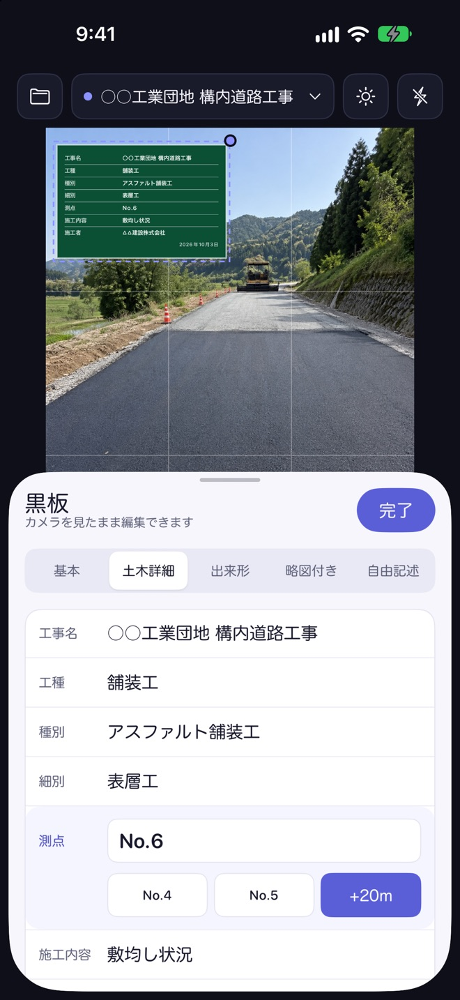
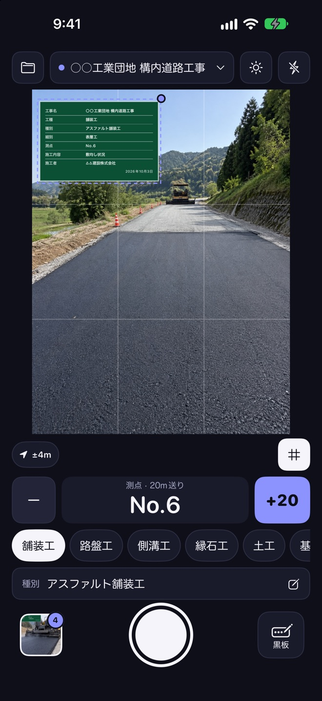
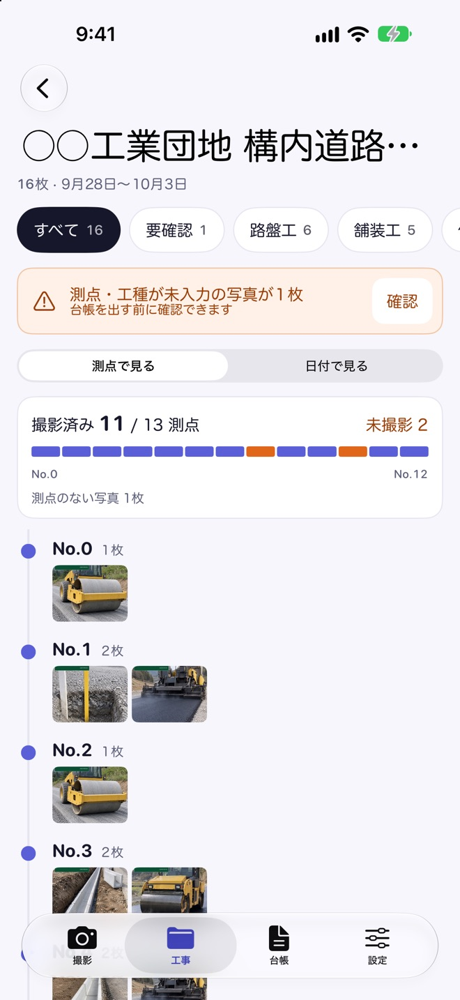
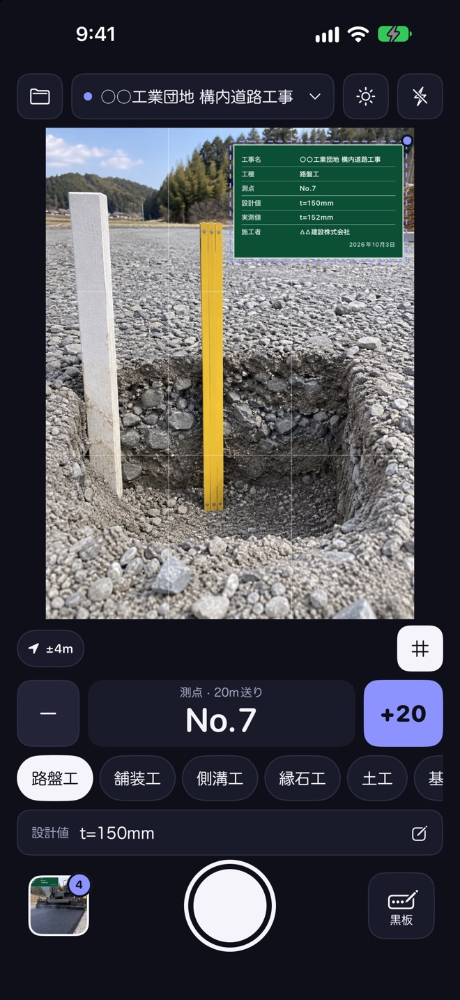
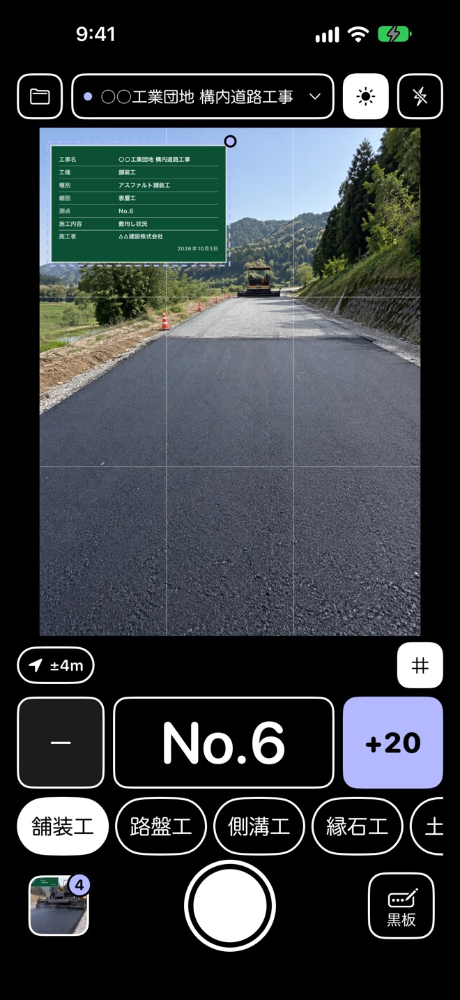
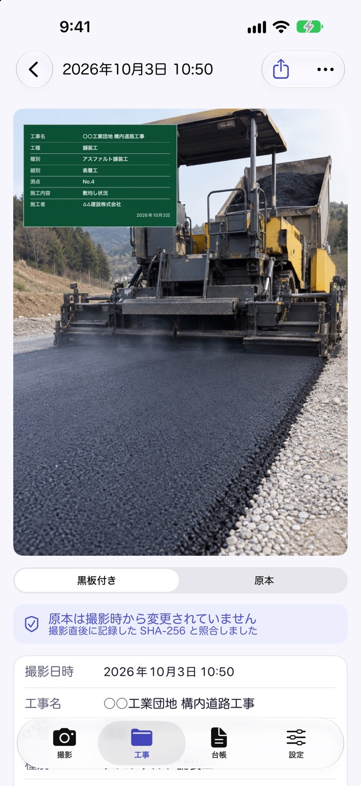
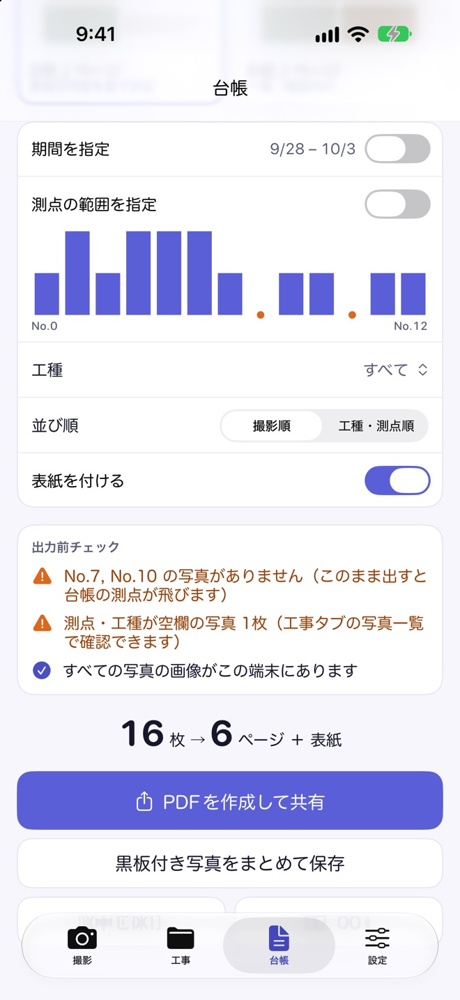

黒板は、カメラを見たまま書き換え
黒板の内容は画面下のシートで書き換えます。撮影画面から離れないので、次の1枚へすぐ戻れます。
- 測点は「＋送り」で次の測点へ。工種は使った順にすぐ選べます
- ひな形は、基本・土木詳細・出来形・略図付き・自由記述の5種類
- 黒板はドラッグで移動、ピンチで拡大縮小。写真と同じ3:4の枠なので、見たままの位置に写ります

工事名・工種・測点を書いた電子小黒板を、カメラに重ねて撮影。写真は工事ごと・測点ごとに並び、撮り忘れた測点も提出前に見つかります。そのまま写真台帳のPDFまで、スマホ1台で。
App Store で見るiPhone・iPad（iOS 26 以上）／アカウント登録は不要です

黒板はファインダーの上に。書いて、立てて、撮る手間がなくなり、1人の現場でも撮影が進みます。
測点ごとに写真が並び、写真のない測点は「未撮影」に。現場にいるうちに気づけます。
ページ見本を見ながら、写真台帳のPDFをその場で作って共有。パソコンでの夜なべは要りません。
リフォーム・外構・設備・内装・小規模土木など、民間工事の写真記録のために作りました。
黒板の内容は画面下のシートで書き換えます。撮影画面から離れないので、次の1枚へすぐ戻れます。

測点で整理する工事では、始点から終点までの測点に写真がぶら下がります。写真のない測点は「未撮影」として色で知らせます。

出来形の黒板には、設計値と実測値を書く欄があります。決まった書き方なら、差（実測−設計）を自動で計算して黒板に載せます。

日差しの強い現場では、文字を大きく、画面を明るくして、離れても黒板と測点が読めるようにします。カメラの明るさから判断して、屋外モードを勧めます。

黒板を合成した写真とは別に、黒板なしの原本もそのまま保存します。撮影した瞬間に原本の指紋（SHA-256）を記録し、写真を開くたびに照合して、変更がないかを表示します。

1ページに3枚（黒板の内容を表で併記）または6枚のレイアウトで、表紙つきの写真台帳を作ります。期間・工種・測点の範囲で絞り込めます。

圏外・日差し・撮り間違い。現場で起きることを前提に作っています。
撮影と保存は端末の中で完了します。電波の届かない山の中や地下でも、そのまま撮り続けられます。
撮った写真は、選んでいる工事に入ります。工事のホームから「No.6 から撮影を続ける」で、前回の続きへすぐ戻れます。
工事と写真は、同じ Apple アカウントの端末と iCloud で同期します。iPad では3列表示とキーボードのショートカットに対応しています。
ゴミ箱に入れた写真は一覧と台帳から外れます。原本は消えないので、あとからいつでも戻せます。
使いたいときだけ、写真に撮影場所（位置情報）を記録できます。記録しない設定でも、ほかの機能はすべて使えます。
よく使う黒板を保存して、いつでも呼び出せます。工事ごとに前回の黒板の内容を引き継ぐので、毎回書き直す必要はありません。
アカウント登録は不要です。写真と工事の情報は、端末と、お使いの iCloud にだけ保存されます。開発者がデータを集めることはなく、解析や広告の仕組みも入っていません。
すべての黒板のひな形と略図の作図、写真の整理まで、Pro なしで使えます。台帳を出すときに、買い切りの Pro へ。
進行中の工事は同時に2件まで
買い切り（1回のお支払い）
一度の購入で、同じ Apple アカウントのほかの端末でも復元できます。ファミリー共有にも対応しています。
Utsusu は、民間工事の写真記録のためのアプリです。公共工事の電子納品などで求められる「写真の信憑性確認」の検定には対応していません。検定に合格したソフトの使用が求められる工事では、お使いいただけません。